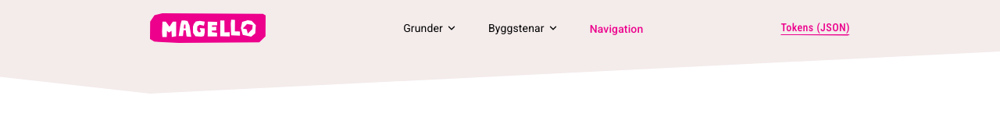
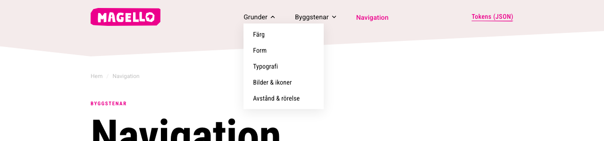
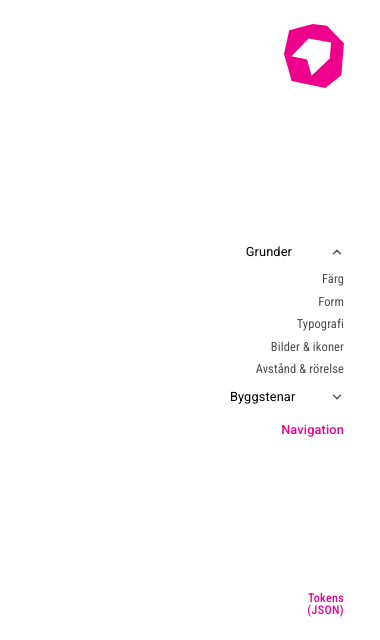
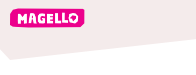
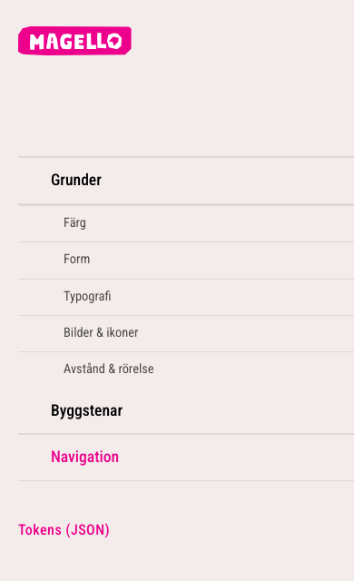

Översikt
Tre uttryck för samma meny
Navigationen har högst två nivåer: huvudlänkar med högst en undernivå. Menyn finns i header (desktop), sidospår (desktop efter scroll) och hamburgermeny (mobil).
| Plats | När | Klassprefix | Öppnas med |
|---|---|---|---|
| Header med dropdown | Desktop (över 768 px), överst på sidan | mg-nav__ | Hover, chevron-klick |
| Sidospår | Desktop efter 80 px scroll | mg-side- | Hover, klick på huvudlänk, chevron |
| Mobilmeny | 768 px och smalare | mg-mob- | Chevron (accordion) |
- Prova själv: håll musen över ”Grunder”, scrolla ner och se sidospåret, smalna av fönstret och öppna hamburgaren
- Hamburgermeny på alla sidor under 768 px
- Fler än två nivåer
- Olika menyinnehåll i header, sidospår och mobilmeny
Header
Signaturytan som header
Headern är den rosagrå signaturpolygonen med logotyp, länkar och en utvald länk (”Lediga jobb”) med skev understrykning. Det finns två varianter.

| Variant | Klass | Beteende | Tröskel |
|---|---|---|---|
| Startsida | .mg-page-header | position: sticky. Polygonen kollapsar till en rektangel vid scroll | 8 px |
| Undersida | .mg-page-header.mg-page-header--rotate | position: fixed. Roterar 90° ut ur bild och lämnar plats åt sidospåret | 80 px |
<div class="mg-page-header mg-page-header--rotate">
<div class="mg-header-shape"></div>
<nav class="mg-nav"><div class="mg-nav__inner">
<a class="mg-nav__logo" href="/"><!-- logotyp --></a>
<ul class="mg-nav__links">…</ul>
<a class="mg-nav__featured" href="#">Lediga jobb</a>
<button class="mg-nav__burger" aria-label="Öppna meny">…</button>
</div></nav>
</div>- Innehållet på undersidor börjar under headern:
padding-top: var(--mg-header-h) - Logotypens vänsterkant är sidans linje: innehållet linjerar mot den
- Headern har
pointer-events: nonenär den roterat bort
- Rotera eller dölja headern på mobil (där ligger den kvar och blir lägre)
- Ändra headerns polygon utan att behålla den lutande kanten
Dropdown
Undermeny under huvudlänken
Menyn öppnas vid hover eller klick på chevron och ligger direkt under länken. Den är position: fixed och placeras av JavaScript.

- Synlighet styrs bara av klassen
.is-open - Ingen lucka mellan länk och meny
- 220 ms stängningsfördröjning och lyssnare på själva menyn
- 150 ms fördröjning innan grannens meny tar över
- Följ med vid scroll, stäng när headern roterat bort, vid klick utanför och
Escape
- CSS
:hoversom styr synlighet. Menyn stängs när pekaren passerar luckan position: absolute. Headern hartransformoch menyn hamnar i vänstra hörnet- Meny som öppnar åt fel håll
- All logik finns i
js/magello.js. Kopiera filen, skriv inte om den
Sidospår
Navigationen följer med
När headern rotat bort glider ett vitt sidospår in från höger med ikonlogotyp och samma länkar. Ett klick på en huvudlänk fäller ut undermenyn i stället för att navigera.

- Visa undermenyn vid hover och vid klick på huvudlänken
- Ge huvudlänken en egen första punkt (”Översikt”) i undermenyn om den har en egen sida
- Mörk text (
--mg-text-2, magenta vid aktiv/hover): sidospåret har vit bakgrund
- Visa sidospåret på mobil
- Vit text på vit bakgrund
- Sidospåret visas först när headern rotat (
.is-visible), efter 80 px scroll
Mobilmeny
Hamburgermeny och drawer
Under 768 px ersätts navlänkarna av en hamburgare som öppnar en helskärmsdrawer från höger. Bakgrunden är rosagrå 100 och undermenyer fälls ut som accordion.


- Stäng med kryss och
Escape - Lås sidans scroll medan menyn är öppen
- Stora tryckytor: länkarna är 1.1 rem och har 16 px luft ovan och under
- Dölja den utvalda länken (”Lediga jobb”). Den ligger längst ned i drawern
- Fler än ett nivåsteg
- Mobilmenyns listor har rosa hårlinjer. Det är ett av få tillåtna linjeundantag (funktionella listavgränsare)
Brödsmula
Var är jag?
Brödsmulan sitter över sidans kicker eller rubrik, i liten grå text. Den sitter på samma höjd på alla undersidor: 156 px från sidtopp (120 px header + 36 px luft).
- Sista nivån är aktuell sida (
aria-current="page"), inte länkad - Avståndet under brödsmulan sätts av containern (
.mg-ingang-col,.mg-page-title)
- Brödsmula skymd av headern
- Olika höjd på olika sidor
- Brödsmula på startsidan
Tillgänglighet
Tangentbord och skärmläsare
Menyerna ska fungera utan mus.
| Behov | Så här |
|---|---|
| Chevron-knappar | aria-expanded och aria-label. Enter/Space öppnar |
| Stänga | Escape stänger meny och dropdown |
| Fokus | Synlig 2 px magenta kontur (:focus-visible) |
| Dolda menyer | pointer-events: none, och visibility: hidden om innehållet inte ska nås |
| Rörelse | prefers-reduced-motion stänger av rotation och glidning |